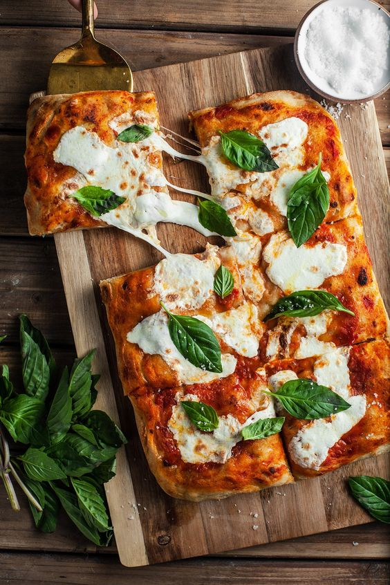

Odin Recipes

Pizza Margherita is a typical Neapolitan pizza, roundish in shape with a raised edge (the cornicione) and garnished with hand-crushed peeled tomatoes, mozzarella (buffalo mozzarella or fior di latte), fresh basil leaves, and extra virgin olive oil. The dough is made by mixing water, salt and yeast (sourdough, fresh or dry brewer's yeast) with flour.
Ingredients
Steps
- Shaping The Dough: The dough, which should be at room temperature, needs to be handled with hands only. First, the ball of dough needs to be placed on a lightly floured working surface. Then, it is to be pressed with fingers only, working from the center outwards and turning it over several times. The result should be a disc of dough with a raised outer edge, approximately 1-2cm (1/2-inch), and a center that is only 0.3cm (1/8-inch) thick. The disc should not exceed 35cm (13.5 inches), but it can be made smaller but no smaller than 22cm (8.5 inches) in diameter.
- Tomatoes: Both peeled, canned and fresh tomatoes can be used, traditionally of the San Marzano dell'Agro Sarnese-Nocerino variety. If using peeled tomatoes, they should be strained, salted, and mashed into a homogenous mixture. In contrast, when fresh ones are used, salt is added to the tomatoes once they're arranged on the pizza before mozzarella is added. The amount of salt added to the tomato is about 10-12g (2 tsp) per kilo of tomatoes. If you'd like to peel the tomatoes at home, first, make an incision at the bottom of each and submerge them shortly in boiling water, then put them in cold water and peel away. Besides the San Marzano dell'Agro Sarnese-Nocerino variety, other acceptable varieties to use fresh are pomodorini di Corbara (Corbarino) and pomodorino del piennolo del Vesuvio D.O.P. Also, both fresh and canned so-called Roma tomatoes (pomodoro lungo tipo Roma) are okay to use.
- Mozzarella/Fior Di Latte: Mozzarella or fior di latte can be used. However, they both should be refrigerated prior to use to dry out a bit before being added to the topping since wet cheese can dilute it and make it mushy. The cheese should be sliced (smaller mozzarella) or cut into strips (bigger mozzarella balls and fior di latte) with a knife; otherwise, if using machines, the milk can easily separate from the cheese. Also, take care not to cut them too thin or too thick because if cut too thin, the cheese will dry out, and if cut too thick, it will release a lot of water during baking, making the filling and center mushy. You will know the cheese was cut to a proper thickness if it's stringy after baking.
- The Topping: The topping for pizza Margherita includes crushed, peeled tomatoes, which are smeared over the dough in a circular fashion using a spoon. If fresh tomatoes are used, they are arranged on top of the pizza and then sprinkled with salt. Next, pieces of mozzarella or fior di latte are scattered on top, followed by basil leaves and a sprinkle of grated, hard cheese. The typical choice is either pecorino, but one that is not too salty, or a 50:50 mixture of pecorino and Parmigiano Reggiano.
- Baking: Traditionally, pizza Margherita is baked in a wood-fired oven at 465 to 485°C (870 to 905°F), but the wood used should not be prone to smoking, have an odor, or moisture, as that may alter the aroma of the pizza.
- At Home Preparation: Because it is impossible to achieve the temperature of a wood-fired oven with a home oven, here are a few tricks that can help you get the best results at home. First, it is advisable to bake the pizza on a baking stone or baking steel and to turn the broiler or grill option on before you put the pizza in the oven. Of course, the oven needs to be heated to the maximum possible temperature. Also, for at-home preparation, it is advised to make the smaller version of the pizza, which will bake faster, thus significantly reducing the risk that you end up with crisp, stiff pizza dough. Also, since the pizza baked in a home oven needs to bake for longer, typically for five to six minutes, it is a good thing to add the mozzarella only two to three minutes before the end of baking time; otherwise, you'll end up with a burnt and dry cheese.
Check our others recipes!